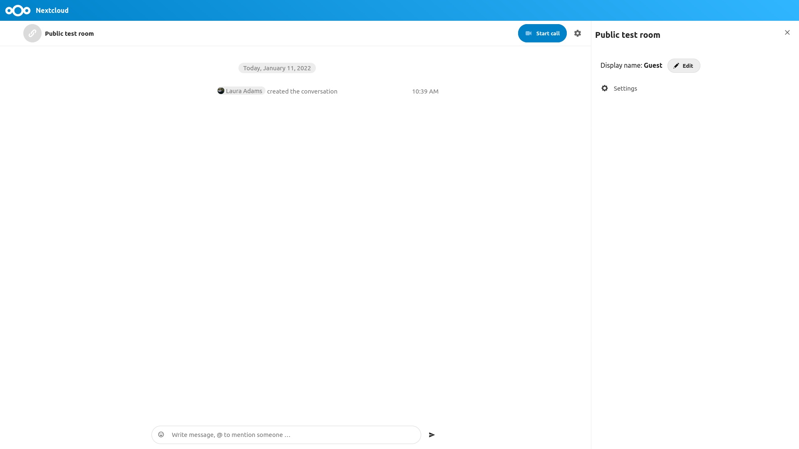

Join a call or chat as guest
Nextcloud Talk offers audio/video call and text chat integrated in Nextcloud. It offers a web interface as well as mobile apps.
Du kan finne ut meir om Nextcloud Snakke på vår nettside.
Bli med i ein chat
Om du har motteke ei lenke til ein chatte samtale, kan du opne denne i din nettleser for å bli med i chatten.
Du kan endre namnet ditt ved å trykke på «Rediger» knappen, lokalisert oppe til høgre.

Kameraet og mikrofonen din sin innstilling kan finnast i «Innstillinger» menyen. Der kan du også finne ei liste over snarveger som du kan nytte.

Joining a call
Du kan starte ein samtale når som helst med «Start samtale» knappen. Andre deltakarar vil bli varsla og kan bli med i samtalen . Om nokon andre allerede har starta ein samtale, vil knappen endre seg til ein grønn «Bli med i samtale» knapp.

Before actually joining the call you will see a device check, where you can pick the right camera and microphone, enable background blur or even join with any devices.

During a call, you can find the Camera and Microphone settings in the ... menu in the top bar.

During a call, you can mute your microphone and disable your video with the buttons in the top-right, or using the shortcuts M to mute audio and V to disable video. You can also use the space bar to toggle mute. When you are muted, pressing space will unmute you so you can speak until you let go of the space bar. If you are unmuted, pressing space will mute you until you let go.
Du kan skjule videoen din (nyttig under skjerm deling) med den vetle pilen rett over video strømmen. Ta det tilbake med den vesle pilen igjen.
Fleire innstillingar
I samtale menyen kan du velge å gå til fullskjerm. Du kan også gjere dette ved å bruke «F» nøkkelen på tastaturet ditt. I samtale innstillingene, kan du finne varslingsalternativer og den fulle samtale skildringen.